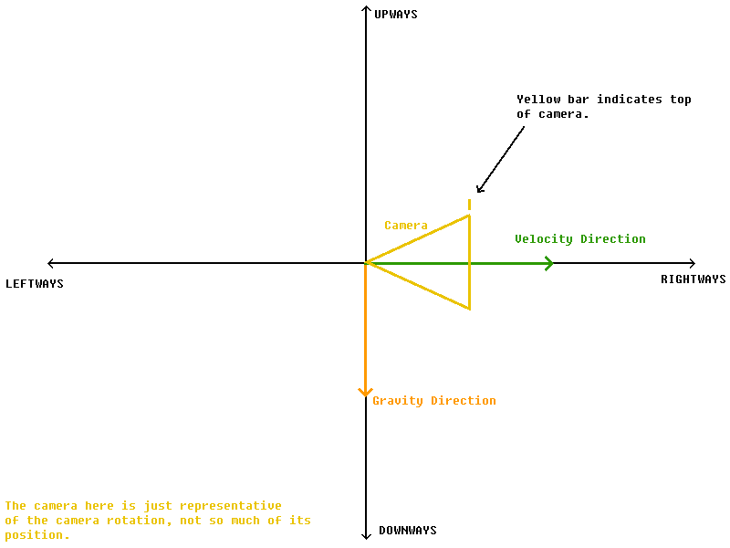
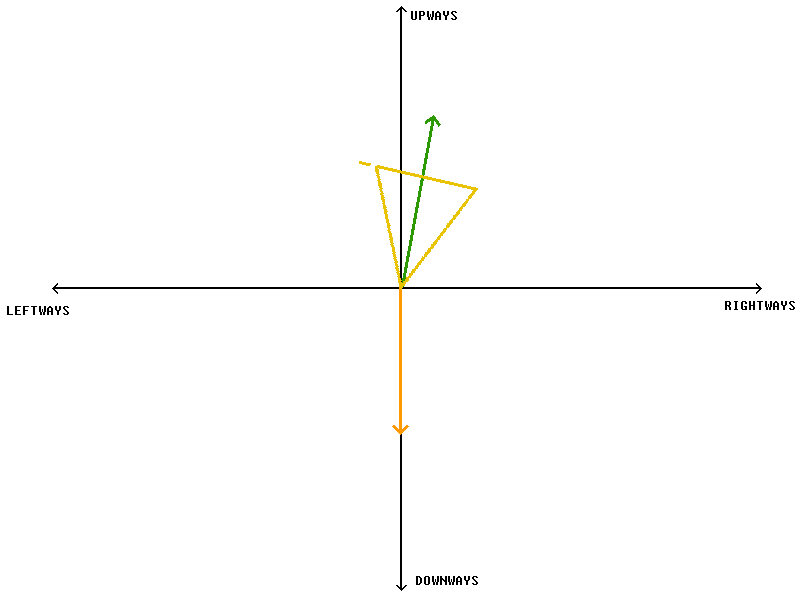
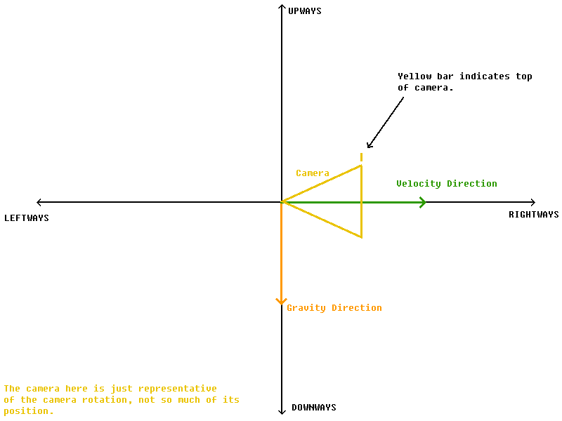
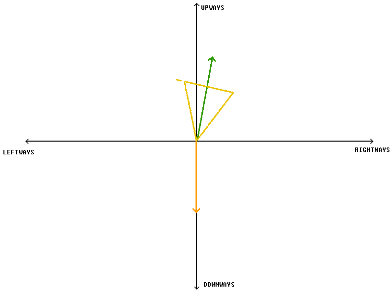

A Guide To Most Distance Mechanics
> Camera Behavior/Manipulation
The camera in this game has it's own behavior that dictates where it looks and how it moves around. There are two main things that dictate how the camera moves:
1. The camera will always move to point/look in the direction of the car's velocity.
2. The bottom of the camera will always move to face toward the direction of gravity.
You can see both of these in action even in normal levels; the camera will always face where you are moving, and the bottom of the camera will always be, well, at the bottom (where the gravity is pointing). Normally though, it isn't that big of a deal to know exactly how the camera works in normal levels. However, in levels where the camera is facing upwards a lot, say in hard levels like 'Reaga' or 'Luro' both by Backgrounds', it is important to know the two concepts that I listed above. This is because by knowing how the camera moves, you can gripfly the car in such a way that you won't get an awful camera position.
The reason why it's easier to get a bad camera position in levels that go upward a lot is because, with an upward velocity direction, it takes less a change in velocity to shift the camera to a different position.
See in the below diagram, the camera faces forward toward the right.

This is the most common scenario, where the player is just driving on the road. Their velocity direction doesn't have much verticality, and the camera can easily turn with any turns the player might do that would shift their velocity in a different direction. If this were a 3D diagram and the player was doing turns, you would see the camera and velocity vector rotate around the upways axis smoothly.
Now, if the player is going upward, with their velocity direction near vertical, the diagram would look like this:

Here though, a small shift in the velocity direction leftways could end up rotating the camera a full 180°! Like so:
Here, the camera has to rotate here 180° around the upways axis when the velocity direction begins to point leftways in order to keep the bottom of the camera closest to the direction of gravity. When this happens, the camera is at its worst, rotating to places that you don't want at all. Especially if it goes back and forth and is constantly rotating 180° as a result of a change in the velocity direction like the one above. However, if you are aware of this, you can carefully choose your velocity to make sure this doesn't happen by constantly keeping your velocity pointing in one direction, not letting it cross over the upways axis. If you really need to turn your velocity direction around to the other side, you can do it slowly, rotating your velocity vector around the upways axis in 3D space so that the camera rotates with it at your own discretion.
1. The camera will always move to point/look in the direction of the car's velocity.
2. The bottom of the camera will always move to face toward the direction of gravity.
You can see both of these in action even in normal levels; the camera will always face where you are moving, and the bottom of the camera will always be, well, at the bottom (where the gravity is pointing). Normally though, it isn't that big of a deal to know exactly how the camera works in normal levels. However, in levels where the camera is facing upwards a lot, say in hard levels like 'Reaga' or 'Luro' both by Backgrounds', it is important to know the two concepts that I listed above. This is because by knowing how the camera moves, you can gripfly the car in such a way that you won't get an awful camera position.
The reason why it's easier to get a bad camera position in levels that go upward a lot is because, with an upward velocity direction, it takes less a change in velocity to shift the camera to a different position.
See in the below diagram, the camera faces forward toward the right.

This is the most common scenario, where the player is just driving on the road. Their velocity direction doesn't have much verticality, and the camera can easily turn with any turns the player might do that would shift their velocity in a different direction. If this were a 3D diagram and the player was doing turns, you would see the camera and velocity vector rotate around the upways axis smoothly.
Now, if the player is going upward, with their velocity direction near vertical, the diagram would look like this:

Here though, a small shift in the velocity direction leftways could end up rotating the camera a full 180°! Like so:
Here, the camera has to rotate here 180° around the upways axis when the velocity direction begins to point leftways in order to keep the bottom of the camera closest to the direction of gravity. When this happens, the camera is at its worst, rotating to places that you don't want at all. Especially if it goes back and forth and is constantly rotating 180° as a result of a change in the velocity direction like the one above. However, if you are aware of this, you can carefully choose your velocity to make sure this doesn't happen by constantly keeping your velocity pointing in one direction, not letting it cross over the upways axis. If you really need to turn your velocity direction around to the other side, you can do it slowly, rotating your velocity vector around the upways axis in 3D space so that the camera rotates with it at your own discretion.